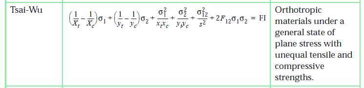
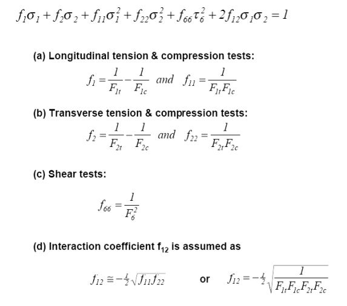

Ref : Nastran Reference Manual

Ref : http://www.coe.montana.edu/me/faculty/cairns/Composites/The%20Tsai-Wu%20Failure%20Criterion.pdf

Nomenclature
Failure criteria compare the loading state at a point (stress or strain) with a set of values reflecting the strength of the material at that point (often referred to as the material allowables). Both loading and strength values should be reflected in the same material coordinate system. For unidirectional materials, this is typically in the direction of the fibres. However, for woven and knitted fabrics , this direction is not obvious, and might change as the material is formed to shape.
In general, the load is represented by a full stress or strain tensor having six independent components. By convention, for lamina materials the material X axis lies in the direction of the warp fibres while the Z axis lies in the through-thickness direction of the sheet. Note than in Patran, shear strains are stored in tensor rather than engineering notation, and any experimental failure strengths should reflect this.
STRESS | σx,σy,σz,τxy,τyz,τxz |
STRAIN | εx,εy,εz,γxy,γyz,γxz |
The strength of a composite can be expressed by an arbitrarily large number of values, depending on the complexity of the failure criterion. However, lamina materials, used in composites, are often assumed to be orthotropic; the through‑thickness stresses or strains are ignored and it is assumed that there is negligible interaction between the different failure modes. The strength of the material can therefore be represented by seven independent variables:
TX | tensile strength along the X axis | 0 < TX |
CX | compressive strength along the X axis | 0 < CX |
TY | tensile strength along the Y axis | 0 < TY |
CY | compressive strength along the Y axis | 0 < CY |
SXY | shear strength in the XY plane | 0 < SXY |
SYZ | shear strength in the YZ plane | 0 < SYZ |
SXZ | shear strength in the XZ plane | 0 < SXZ |
In the Tsai-Wu criterion, these values have been supplemented by an interaction term which reflects the interdependence of failure modes due to loading along both the X and Y material directions.
IXY | interaction between X and Y directions | -1< IXY <1 |
Note that the above values can be applied to either stress or strain.
The form of the failure criterion is typically described as a mathematical function of the above variables which reaches the value of unity at failure as follows.
Failure Index = FI (load, strength) = 1
The strength of a structure can be given as a Strength Ratio (SR), which is the ratio by which the load must be factored to just fail. (Note that the Strength Ratio is not necessarily the reciprocal of the Failure Index.) Alternatively, the Margin of Safety (MoS), where MoS = SR - 1, is used.
Tsai-Wu Criterion
The Tsai-Wu failure criterion is an unashamed, empirical criterion based on the sum of the linear and quadratic invariants as follows:
Fi σi + Fij σi σj = 1 | i,j = 1...6 |
where Fi and Fij are dependent on the material strengths. For the restrictions of lamina materials, this equation reduces to:
FI = FX σx + FY σy + FXX σx2 + FYY σy2 + 2 FXY σx σy + FSS τxy2
where:
FX = 1/TX - 1/CX
FY = 1/TY - 1/CY
FXX = 1/(TX CX)
FYY = 1/(TY CY)
FXY = IXY sqrt(FXX FYY) = IXY / sqrt(TX CX TY CY)
FSS = 1 / (SXY SXY)
Because this failure theory is quadratic, the Strength Ratio (SR) = 1/FI. However, multiplying the failure criterion by SR and rearranging gives
a SR2 + b SR - 1 = 0
where
a = FXX σx2 + FYY σy2 + 2 FXY σx σy + FSS τxy2
b = FX σx + FY σy
Therefore
SR = [-b + sqrt (b2 + 4a)] / 2a
In the Laminate Modeler, the Tsai-Wu criterion for in-plane loads (representing fiber failure) has been supplemented by a maximum load theory for out-of-plane shear loads (representing matrix failure):
FI = max( abs(γyz)/SYZ, abs(γxz)/SXZ )
In this case,
SR = 1/FI
For every ply, the lower of the Margins of Safety for fibre and matrix failure is calculated and displayed.